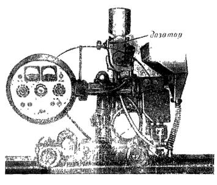
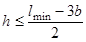
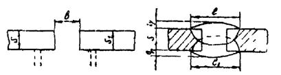
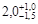
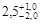
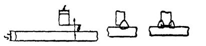
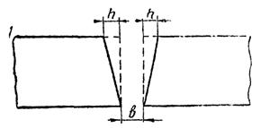

МИНИСТЕРСТВО МОНТАЖНЫХ И СПЕЦИАЛЬНЫХ
СТРОИТЕЛЬНЫХ РАБОТ СССР
УТВЕРЖДАЮ:
Заместитель министра монтажных
и специальных строительных
работ СССР
К.К. Липодат
10 февраля 1977 г.
ИНСТРУКЦИЯ
ПО АВТОМАТИЧЕСКОЙ ДУГОВОЙ
ПОД ФЛЮСОМ И ЭЛЕКТРОШЛАКОВОЙ
СВАРКЕ С ПОРОШКОВЫМ
ПРИСАДОЧНЫМ МЕТАЛЛОМ (ППМ)
ВСН 375-77
ММСС СССР
ЦЕНТРАЛЬНОЕ
БЮРО
НАУЧНО-ТЕХНИЧЕСКОЙ ИНФОРМАЦИИ
Москва - 1978
СОДЕРЖАНИЕ
Инструкция разработана Всесоюзным научно-исследовательским институтом по монтажным и специальным строительным работам (ВНИИмонтажспецстрой) Минмонтажспецстроя СССР с участием Института электросварки (ИЭС) им. Е. О. Патона АН СССР и Московского высшего технического училища (МВТУ) им. Н. Э. Баумана Министерства высшего и среднего специального образования СССР.
Инструкция подготовлена кандидатами техн. наук И. И. Ивочкиным, А. И. Алексеевым, Б. Д. Малышевым, Ю. А. Черновым, А. Ф. Соседовым, Н. П. Рощупкиным; инженерами К. А. Илюковичем, Л. М. Матвеевой (ВНИИМонтажспецстрой) при участии докт. техн. наук О. И. Стеклова, канд. техн. наук Б. Ф. Якушина (МВТУ им. Н. Э. Баумана), доктора техн. наук Б. Ф. Лебедева, В. А. Богдановского (ИЭС им. Е. О. Патона).
Инструкция предназначена для специалистов сварочного производства, работающих по изготовлению и монтажу металлических конструкций.
|
Минмонтажспецстрой СССР |
Ведомственные строительные нормы |
ВСН 375-77 |
|
Инструкция по автоматической дуговой под флюсом и электрошлаковой сварке с порошковым присадочным металлом (ППМ) |
ММСС СССР |
|
|
Впервые |
1.1. Инструкция распространяется на следующие способы сварки металлических конструкций:
автоматическую дуговую сварку под флюсом с применением порошкового присадочного металла (ППМ) в нижнем положении стыковых и угловых соединений из низкоуглеродистых сталей марок ВСт3кп, ВСт3пс, ВСт3сп и низколегированных сталей марок 09Г2С, 14Г2, 10Г2С1, 10ХСНД, 15ХСНД, 16Г2АФ и 14Х2ГМР толщиной до 60 мм;
электрошлаковую сварку с применением ППМ низкоуглеродистых сталей марок ВСт3кп, ВСт3пс, ВСт3сп и низколегированных сталей марок 10Г2С1, 09Г2С, 10ХСНД, 15ХСНД, 16Г2АФ толщиной 30-60 мм.
При обоих способах сварки с ППМ следует руководствоваться общими требованиями СНиП III-18-75 «Металлические конструкции. Правила производства и приемки работ» и положениями СНиП III-A.11-70 «Техника безопасности в строительстве», а также указаниями «Инструкции по изготовлению стальных конструкций из углеродистой и низколегированной сталей» МСН 97-65/ГМСС СССР и «Инструкции по электрошлаковой сварке кожухов доменных печей».
1.2. Введение в зону сварки ППМ повышает тепловую эффективность процесса и качество сварного соединения. Благодаря таким свойствам ППМ, как автономность, развитая поверхность и малая масса частиц, введение его в зону сварки позволяет значительно уменьшить потери тепла и повысить коэффициент полезного действия источника сварочного тепла.
|
Внесены |
Утверждены |
Срок введения |
1.3. В качестве ППМ используется крупка, приготовленная на простейшем станке (приложение 1) из сварочной проволоки диаметром 0,8-2,0 мм. При этом длина частицы крупки должна быть равна диаметру проволоки.
1.4. Сварочная проволока, применяемая для изготовления крупки, должна быть очищена от технологических и противокоррозионных смазок, масел, грязи и ржавчины.
1.5. ППМ должен иметь неокисленную поверхность и храниться в металлических закрытых сосудах в сухом помещении.
1.6. Изготовлять ППМ можно на любом стандартном и нестандартном оборудовании, обеспечивающем требуемые размеры металлической крупки.
1.7. Сварочный флюс АН-348А, АН-60, АН-22, АН-8 по ГОСТ 9082-69 перед сваркой необходимо прокалить при температуре 200-250 °С в течение 1,0-1,5 ч, если влажность флюса превышает 0,1 %, в соответствии с техническими условиями на эти материалы.
2.1. Автоматическая дуговая сварка под флюсом с ППМ производится на стандартном сварочном оборудовании: сварочных тракторах ТС-17МУ, ДТС-38, ТС-35, АДС-1000, сварочных самоходных автоматах подвесного типа АБСК, А-639К и др.
В качестве источников питания рекомендуются выпрямители ВКСМ-1000, ВДМ-1601, ВДМ-3001, ВСЖ-1600 и преобразователи типа ПСМ.
2.2. ППМ в зону сварки вводят двумя способами:
путем предварительной засыпки ППМ в зазор или разделку перед сваркой (рис. 1, а) простейшими устройствами;
путем подачи ППМ с ферромагнитными свойствами на вылет электрода в процессе сварки (рис. 1, б).
Дозировку и подачу ППМ на вылет электрода осуществляют дозатором конструкции ВНИИмонтажспецстроя, который устанавливают на любой сварочный трактор (рис. 2).
2.3. Поставляемый для сварки металл и сварочные материалы должны иметь сертификаты заводов-изготовителей.
2.4. Для обеспечения требуемых свойств металла шва необходимо применять ППМ и сварочную проволоку определенного химического состава (табл. 1), флюс марки АН-348А по ГОСТ 9087-69.
Рис. 1. Принципиальные схемы сварки:
а - с предварительной засыпкой ППМ в зазор или разделку; б
- с подачей ППМ на вылет электрода в процессе сварки

Рис. 2. Сварочный трактор АДС-1000 с установленным на нем дозатором-приставкой для подачи ППМ на вылет электрода
Таблица 1
Сварочная проволока, используемая для приготовления ППМ в зависимости от свариваемого металла и марки электродной проволоки
|
Электродная проволока |
ППМ в виде крупки из проволоки |
||
|
марка |
диаметр, мм |
||
|
Низкоуглеродистые стали |
Св-08А Св-08ГА |
4-5 4-5 |
Св-08А или Св-08Г2С Св-08А |
|
Низколегированные стали: |
|||
|
09Г2С |
Св-08ГА |
4-5 |
Св-08ГА или Св-08Г2С |
|
Св-10Г2 |
4-5 |
Св-10Г2 или Св-08Г2С |
|
|
10Г2С1 |
Св-08ГА |
4-5 |
Св-10Г2 или Св-08Г2С |
|
Св-10Г2 |
4-5 |
Св-10Г2 или Св-08Г2С |
|
|
14Г2 |
Св-08ГА |
4-5 |
Св-08Г2С или Св-10Г2 |
|
Св-10Г2 |
4-5 |
Св-10Г2 или Св-08Г2С |
|
|
16Г2АФ |
Св-08НМА или Св-08ХМ |
4-5 |
Св-08Г2С |
|
10ХСНД 15ХСНД |
Св-08ХМ |
4-5 |
Св-08Г2С или Св-08ГА |
Примечание. При сварке стали марки 14Х2ГМР необходимо применять электродную проволоку марки Св-08ХН2ГМЮ с ППМ из проволоки Св-08Г2С, флюс АН-17М.
Можно применять также флюсы АН-60 и АН-22 или смесь флюсов АН-348А и АН-60.
2.5. Типы сварных соединений, конструктивные элементы подготовки свариваемых кромок (углы разделки, притупления и т.п.) должны соответствовать данным табл. 2 и 3.
2.6. При оборке деталей конструкции под сварку и подготовке поверхности необходимо руководствоваться указаниями СНиП III-18-75 «Металлические конструкции. Правила изготовления, монтажа и приемки» и «Инструкции по изготовлению стальных конструкций из углеродистой и низколегированной сталей» МСН 97-65/ГМСС СССР.
При подготовке под сварку стыковых соединений качество реза должно удовлетворять требованиям ГОСТ 14792-69. При этом допускается неперпендикулярность кромок реза к поверхности листов на величину h, которая не должна превышать значений, определяемых по формуле:

где lmin - минимальная ширина шва по ГОСТ;
b - зазор по табл. 2.
Таблица 2
Швы стыковых соединений без скоса кромок, двухсторонние на стальной подкладке или флюсовой подушке
|
Подготовка кромок |
Выполненный шов |
||||
|
С2 |
 |
||||
|
Параметры, мм: |
|||||
|
S = S1 |
10 |
20 |
30 |
40 |
50 |
|
b |
4 |
6 |
7 |
8 |
9 |
|
l = l1 |
20 ± 4,0 |
22 ± 4,0 |
35 ± 5,0 |
34 ± 5,0 |
35 ± 5,0 |
|
q = q1 |
 |
2,5 ± 2,0 |
 |
|
|
Таблица 3
Швы тавровых соединений без скоса кромок, двухсторонние и односторонние
|
Подготовка кромок |
Выполненный шов |
|||
|
T1 и Т5 |
 |
|||
|
Параметры, мм: |
||||
|
S1 ³ S |
3-5 |
6-10 |
12-16 |
18-40 |
|
b |
0+1,0 |
0+1,5 |
0+1,5 |
0+1,5 |
При сборке стыкового соединения листы с неперпендикулярно обработанными кромками необходимо размещать так, чтобы зазор в корне шва соответствовал значениям b согласно табл. 2 (рис. 3).

Рис. 3. Сборка стыков с неперпендикулярно обработанными кромками
2.7. При сборке конструкций прихватки нужно выполнять ручной электродуговой сваркой электродами типа Э-42А с фтористо-кальциевым покрытием (марки УОНИ-13/45, УП-2/45 и др.), типа Э-46Т с рутилово-карбонатным покрытием (марки МР-3, ОЗС-4, АНО-3 и др.) или полуавтоматической сваркой в среде СО2, а также в смеси газов. Перед сваркой прихватки и свариваемые кромки должны быть тщательно очищены от шлака.
2.8. В тех местах, где зазоры в стыках деталей, собранных под сварку, превышают величины, указанные в табл. 2-3, в виде исключения разрешается производить подварку стыков либо наплавку кромок ручной дуговой или полуавтоматической сваркой в среде СО2.
2.9. Способ сварки с предварительной засыпкой ППМ (см. рис. 1, а) предназначен для двухсторонней сварки стыковых соединений без разделки кромок, а также для выполнения соединений с разделкой кромок и тавровых «в лодочку». Для предотвращения просыпания ППМ сварку первого прохода стыков следует производить на металлическом листе. Для этих целей разрешается применять флюсовую подушку или подушку из ППМ.
При сварке листов толщиной до 36 мм зазор в стыке следует заполнять ППМ заподлицо с поверхностью листов; для толщин 36-60 мм зазор заполняют на 2/3 толщины свариваемого металла.
Толщина слоя ППМ при сварке тавровых соединений «в лодочку» должна быть на 2 мм больше величины катета шва.
2.10. Режим автоматической сварки под флюсом с предварительной засыпкой ППМ стыков без разделки и «в лодочку» следует назначать в соответствии с табл. 4-5.
При сварке стыковых соединений других толщин, не указанных в табл. 4, скорость сварки следует корректировать в соответствии с разделом «Расчет технологических параметров сварки» (приложение 2).
На режимах, указанных в табл. 5, сваривают соединения «в лодочку» из низкоуглеродистых сталей. Режимы сварки низколегированных сталей «в лодочку» следует выбирать по методике, изложенной в приложении 3.
Сварку за один проход угловых соединений «в лодочку» с катетом шва более 14 мм осуществляют на более мощных источниках питания.
При использовании источников сварочного тока ВДМ-1601, ВДМ-3001 и ВСЖ-1600 сварку швов тавровых соединений «в лодочку» до катетов 18-20 мм можно производить за один проход.
На режимах, указанных в табл. 4, сваривают стыковые соединения из низкоуглеродистых и низколегированных сталей без предварительного подогрева, кроме сталей 16Г2АФ и 14Х2ГМР толщиной свыше 40 мм, режимы сварки этих сталей следует выбирать по методике приложения 3.
2.11. Сварку стыковых соединений толщиной до 60 мм следует производить с двух сторон, по одному проходу с каждой стороны. Сварку второго прохода осуществляют в соответствии с табл. 4 на режиме первого, при этом засыпки ППМ не требуется. Сварку следует производить постоянным током обратной полярности.
2.12. Дозировка ППМ при сварке «в лодочку» осуществляется с помощью шаблона (рис. 4). Для выполнения сварки «в лодочку» необходимо заменить направляющее колесо трактора другим, более широким, имеющим выточку по окружности такой глубины, чтобы колесо не касалось слоя ППМ, предварительно засыпанного в разделку.
Таблица 4
Режимы однодуговой автоматической двухсторонней сварки стыковых соединений без скоса кромок под флюсом с предварительной засыпкой ППМ
|
Оптимальный зазор, мм |
Диаметр электродной проволоки, мм |
Скорость подачи проволоки, м/ч |
Сила сварочного тока, А |
Напряжение, В |
Скорость сварки, м/ч |
Расход ППМ, г/см |
|
|
20 |
6 |
5 |
103 |
1000-1100 |
40-44 |
35 |
5,0 |
|
30 |
7 |
5 |
103 |
1000-1100 |
42-45 |
19,5 |
8,0 |
|
40 |
8 |
5 |
128 |
1200-1300 |
43-48 |
16 |
12,0 |
|
50 |
9 |
5 |
140 |
1300-1400 |
44-48 |
12 |
16,0 |
|
60 |
11 |
5 |
163 |
1350-1450 |
45-50 |
12 |
18,0 |
|
20 |
6 |
4 |
154 |
900-950 |
42-45 |
35 |
5,0 |
|
30 |
7 |
4 |
163 |
950-1000 |
42-46 |
19 |
8,0 |
|
40 |
8 |
4 |
163 |
950-1000 |
43-48 |
14 |
12,0 |
|
50 |
9 |
4 |
210 |
1100-1200 |
44-49 |
14 |
16,0 |
|
60 |
11 |
4 |
240 |
1300-1400 |
46-50 |
12 |
18,0 |
Таблица 5
Режимы однодуговой автоматической сварки под флюсом угловых соединений «в лодочку» из низкоуглеродистых сталей с предварительной засыпкой ППМ
|
Сторона шаблона для ППМ, мм |
Диаметр проволоки, мм |
Сварочный ток, А |
Напряжение, В |
Скорость подачи проволоки, м/ч |
Скорость сварки, м/ч |
Расход ППМ, г/см |
Количество проходов |
|
|
8 |
10 |
5 |
750-800 |
36-38 |
68,5 |
54,5 |
2 |
1 |
|
10 |
12 |
5 |
800-850 |
38-40 |
74,5 |
47,0 |
3 |
1 |
|
12 |
14 |
5 |
850-900 |
40-42 |
81,0 |
37,5 |
4 |
1 |
|
14 |
16 |
5 |
900-950 |
40-42 |
87,5 |
32,0 |
5 |
1 |